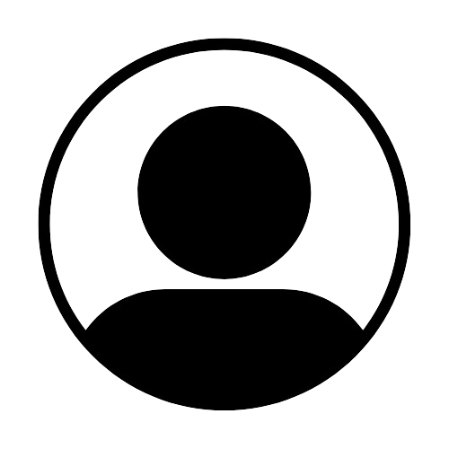

<ion-tabs >
        <ion-content style="position: absolute; z-index: 1;"  >
          <ion-refresher slot="fixed" (ionRefresh)="handleRefresh($event)">
            <ion-refresher-content></ion-refresher-content>
          </ion-refresher>
          <ion-list  style="margin-bottom: 90px;">
            <div *ngFor="let post of posts " class="post-item" style="margin-top: 5%;">
              <div style="display: flex; flex-direction: raw; align-items: center; gap: 20px; margin-left: 10px; position: absolute;">
                
                <p style="color: white;">{{ post.userDetails[0].name }}</p>
              </div>
              <div style="margin-bottom: 10px;">
                <ion-img *ngIf="isImage(post.file); else videoContent" [src]="post.file" alt="Imagen"></ion-img>
                <ng-template #videoContent>
                  <video  [src]="post.file" autoplay loop controls>
                  </video> 
                </ng-template>
              </div>
              <ion-label class="label">
                <h2>{{ post.title }}</h2>
                <p>{{ post.description }}</p>        
              </ion-label>
              <ion-list lines="full" class="likeMenu">
                <ion-icon size="large" name="heart-outline"></ion-icon>
                <ion-icon size="large" name="chatbubble-outline"></ion-icon>
                <ion-icon size="large" name="share-outline"></ion-icon>
              </ion-list>
            </div>
            
          </ion-list>
          <!-- <ion-infinite-scroll (ionInfinite)="onIonInfinite($event)">
            <ion-infinite-scroll-content></ion-infinite-scroll-content>
          </ion-infinite-scroll> -->

        </ion-content>
      <ion-tab-bar slot="bottom" >
        <ion-tab-button tab="home">
          <ion-icon name="home-outline"></ion-icon>
        </ion-tab-button>
        <ion-tab-button tab="radio">
          <ion-icon name="search"></ion-icon>
        </ion-tab-button>
        <ion-tab-button tab="library">
          <ion-icon name="add-circle-outline"></ion-icon>
        </ion-tab-button>
        <ion-tab-button tab="search">
          <ion-icon name="cog-outline"></ion-icon>
        </ion-tab-button>
        <ion-tab-button tab="search">
          <ion-icon name="person-circle-outline"></ion-icon>
        </ion-tab-button>
      </ion-tab-bar>
    
</ion-tabs> 